About Me
I am a first-year PhD student in the xML Lab at the Department of Electrical and Computer Engineering, National University of Singapore, advised by Prof. Xinchao Wang, supported by the NUS President’s Graduate Fellowship.
Previously, I received my Bachelor degree in Computer Science from Hanoi University of Science and Technology, Vietnam.
Research Interests
- Multimodal Learning: vision and language models
- Robot Learning: behavior foundation models, vision–language models, world models
- Speech Processing: speaker verification, automatic speech recognition, etc.
News
- Aug 2026 Started my PhD at NUS ECE. 🎉
Publications
-
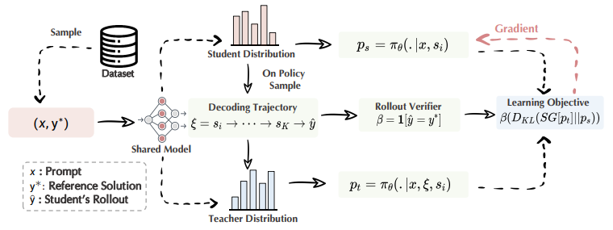
-
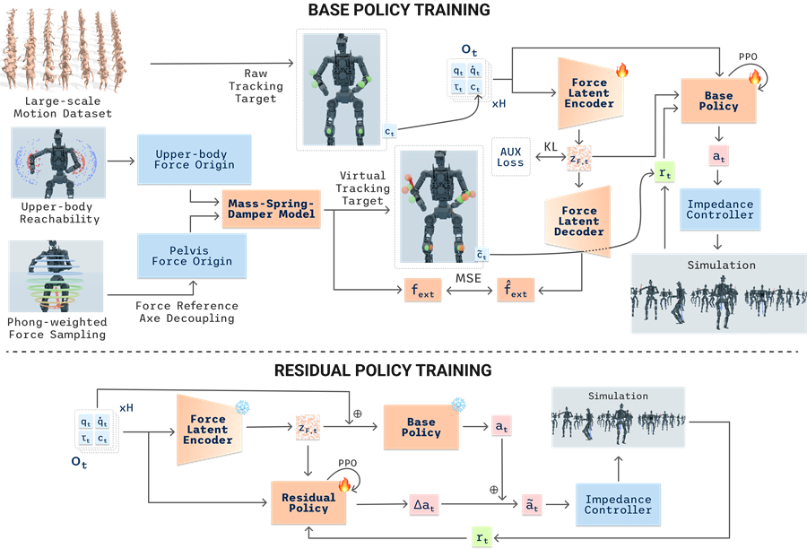
CompliantWBC: Whole-Body Compliance for Heavy Humanoids via Force Latent Estimation and Residual Impedance Targets
ECCV EMR, WMEAI & HOI Workshops (2026)
-
TACT-ful: Multi-Channel Terrain Affordance and Compliance Training for Payload-Robust Perceptive Humanoid Locomotion
ECCV EMR & X-Reason Workshops (2026)
-
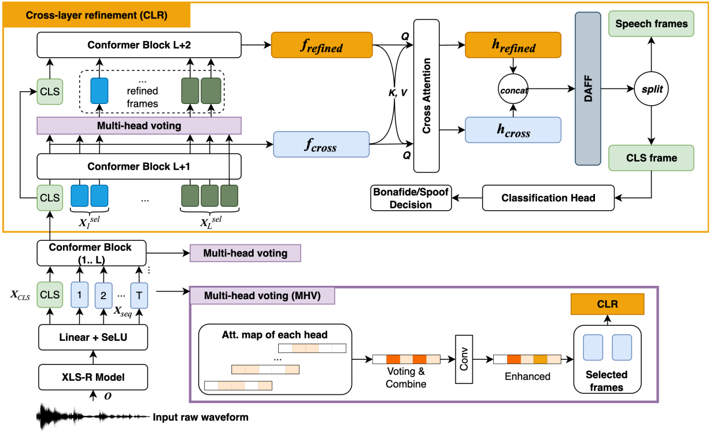
-
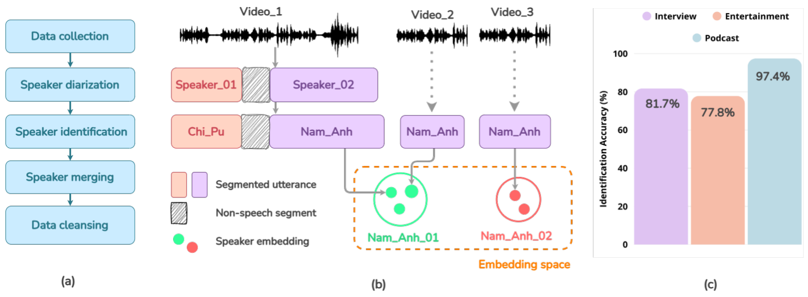
-
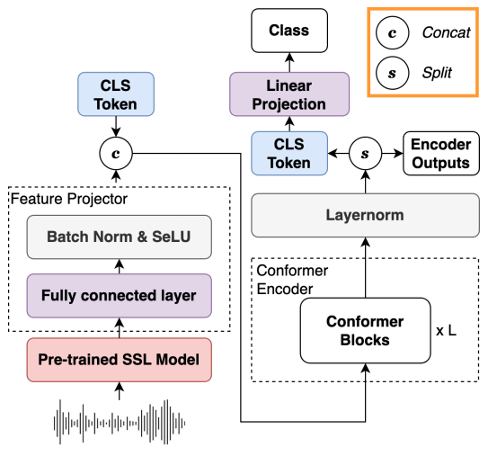
-
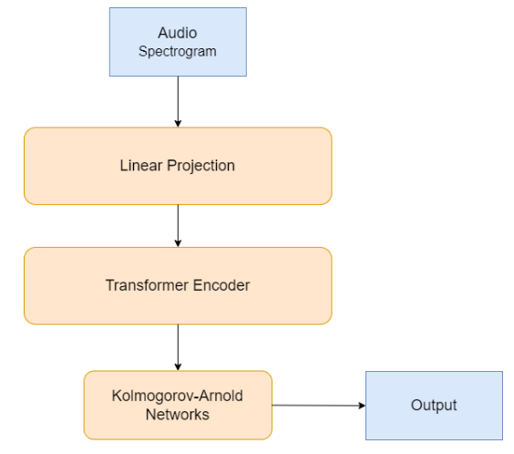
-
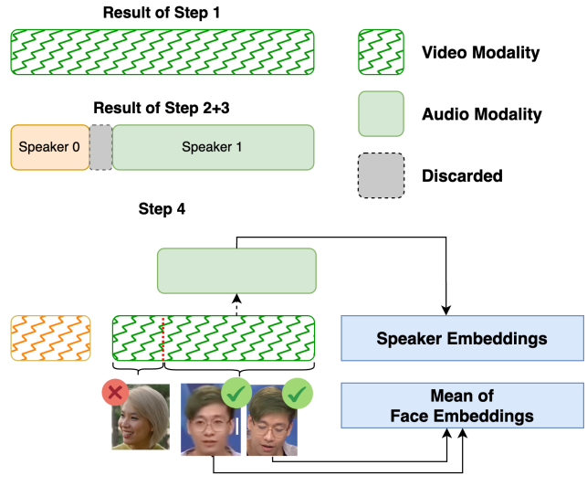
-
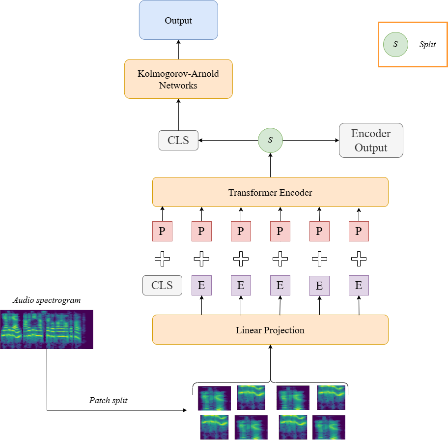
-
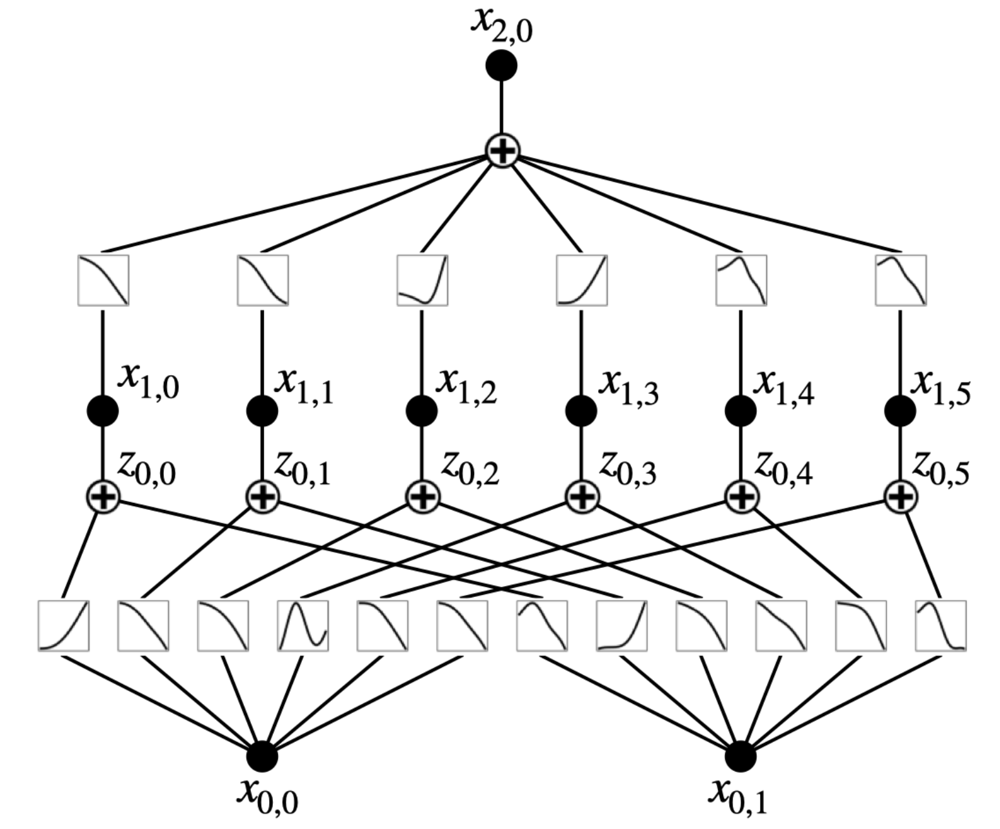
-
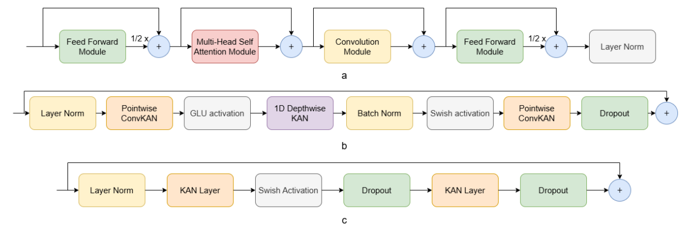
-
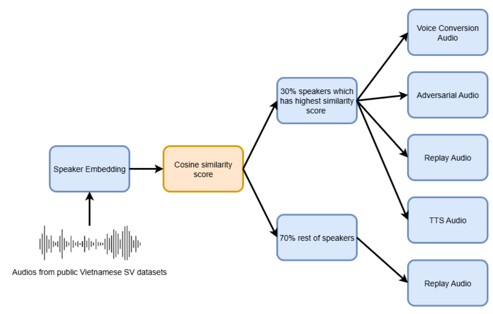
-
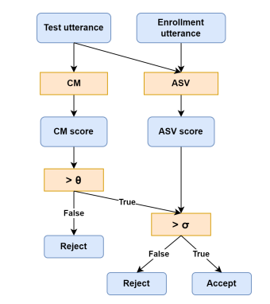
-
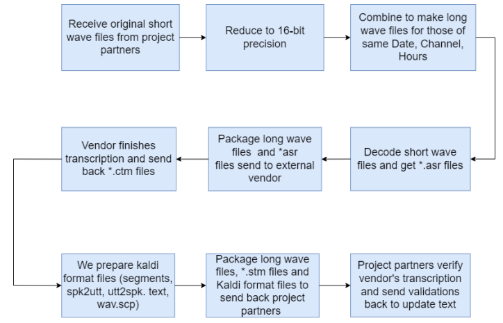
Automatic Speech Recognition and Understanding over Noisy Air Traffic Control VHF Channels in Singapore
SESAR Innovation Days (2024)
Industry Experience
-
2025

VinRobotics
7/2025 – 8/2026- Supervisor: Le Thai An, Do Tan Dzung, and Trinh Thi Cuc.
-
2025
Vbee AI
1/2025 – 9/2025 -
2024
Institute for Infocomm Research (I2R), A*STAR
3/2024 – 8/2024- Supervisor: Dr. Tran Huy Dat, Deputy Department Head, ALI Dept.